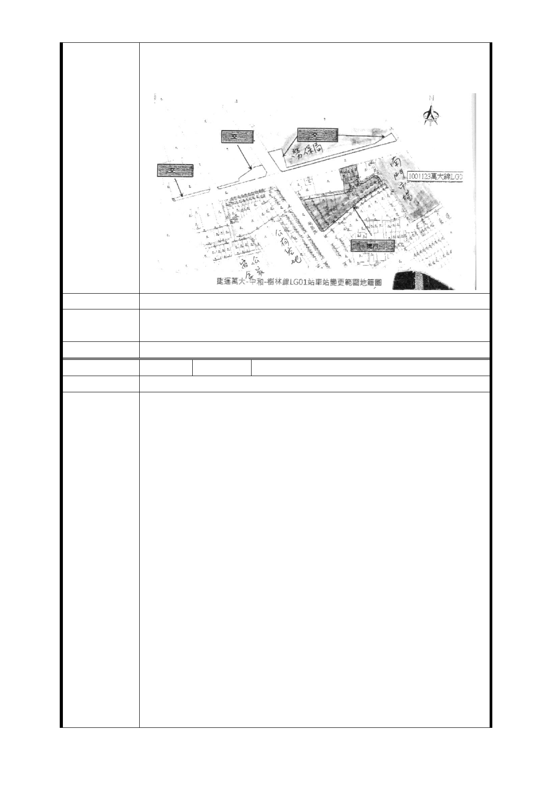

十分荒謬，明顯不方正，懇請以士林文林苑為鑑，真正傾聽
人民的心聲，確實保障人權與居住正義。
此致臺北市都市計畫委員會
建議辦法
市府回應
意見
同編號捷四-4 回應意見。
委員會決議 同編號交一－1 委員會決議。
編 號 捷四-5 陳情人 楊○桑等 31 人
建議位置
1.建議納人毗鄰土地發開區（捷）四之公共設施保留地於旨
揭計畫內容，將道路用地變更為土地開發區。
（1）建議理由：毗鄰該區之已開闢及未開闢計畫道路若未併
同納入開發範圍恐造成本區周邊交通環境之衝擊，並影響當
地住戶生活品質及權益 · 另未來投資者或實施者在開發階
段亦可同時協助政府開闢計畫道路建構更完善的交通系統。
促進地方福祉 · 也可降低政府徵收公共設施保留地之壓
力·
（2）建議辦法：請比照南海段 4 小段 141-1、144-1、145-1、
148-l 部分之道路地已納人本次開發用地，另請一併納人南
陳 情 理 由 海 4 小段 108-1、109-1、142、143-146、147、148-l 部分、
149-1、150、151、152-l、153-1、155、156-1、157-1、158
之道路地（詳地籍謄本著色部份）為開發用地以更臻完整。
2.建議增加容積獎勵，以確保目前之住戶權益。
（1）建議理由：查一般都更程序可以爭取近約 1.4 倍之容積
獎勵，且四、五樓公寓專案更可享有一坪換一坪獎勵，最高
可爭取到 2 倍之容積獎勵；另查依台北市政府捷運工程局
100.3.29 與 100.3.31 對萬大線新北市段路線計劃案之簡報
內容有關 LGO6－2、LGO7－2、LG08－1 與 LG08－2 皆建議變
更後基準容積率為 750％ ，亦即為原容積之 2.5 倍。其目的
係在於保障地主分回房地之使用坪數（即不包含樑柱、雨遮、
- 30 -